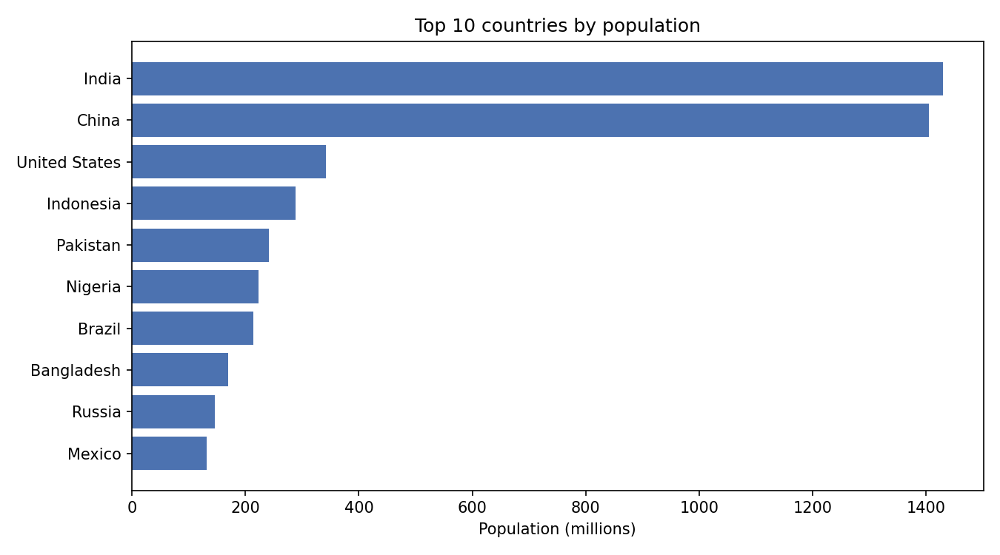
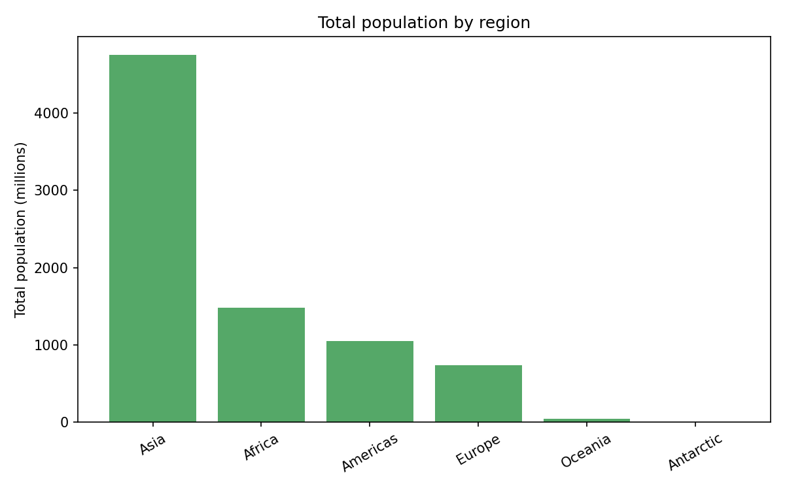
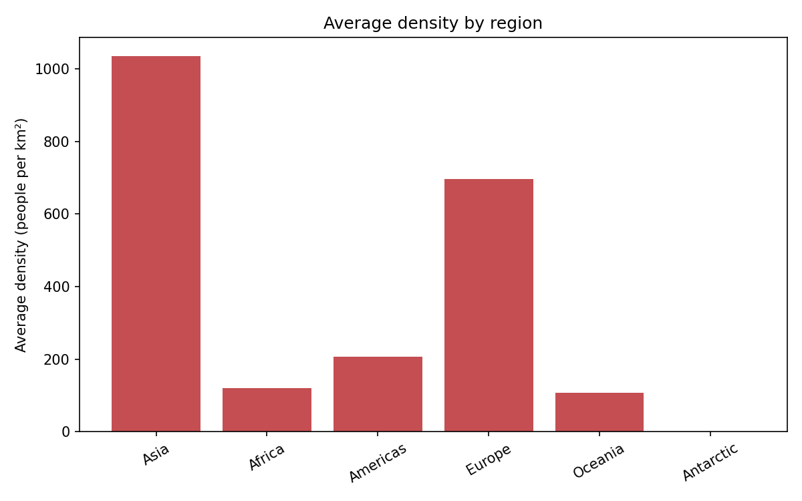
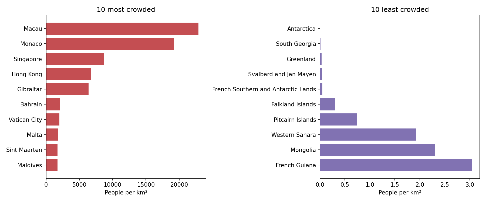
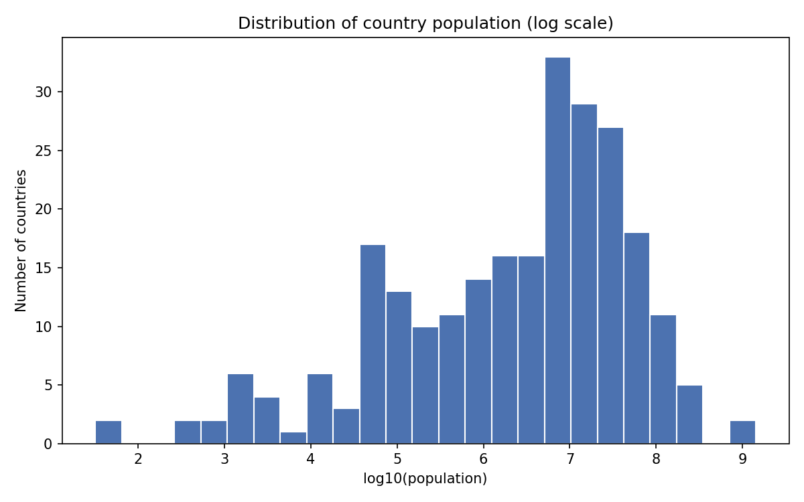
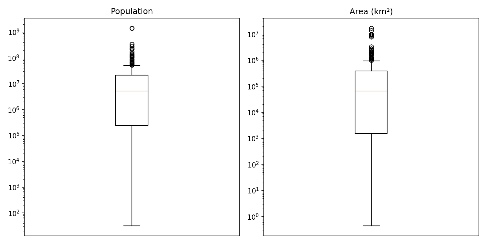

248valid countries
6regions
Indialargest population
Macaumost crowded
How it works
1. Extract
Downloads country data from the REST Countries API, 100 records per request.
2. Transform
Cleans with pandas, adds a density column, validates every record with Pydantic.
3. Load
Saves the clean data into a SQLite database.
4. Analyze
SQL queries, IQR outlier detection and 6 charts.
Charts






Region comparison
| Region | Countries | Total population | Avg density (per km²) |
|---|---|---|---|
| Asia | 50 | 4,748,072,598 | 1,035.2 |
| Africa | 59 | 1,484,898,012 | 119.5 |
| Americas | 56 | 1,047,086,413 | 206.1 |
| Europe | 53 | 738,104,359 | 696.2 |
| Oceania | 27 | 48,148,773 | 106.9 |
| Antarctic | 3 | 1,732 | 0.0 |
Top 10 by population
| # | Country | Population |
|---|---|---|
| 1 | India | 1,429,404,000 |
| 2 | China | 1,404,890,000 |
| 3 | United States | 341,784,857 |
| 4 | Indonesia | 288,315,089 |
| 5 | Pakistan | 241,499,431 |
| 6 | Nigeria | 223,800,000 |
| 7 | Brazil | 214,211,951 |
| 8 | Bangladesh | 169,828,911 |
| 9 | Russia | 146,028,325 |
| 10 | Mexico | 131,231,919 |